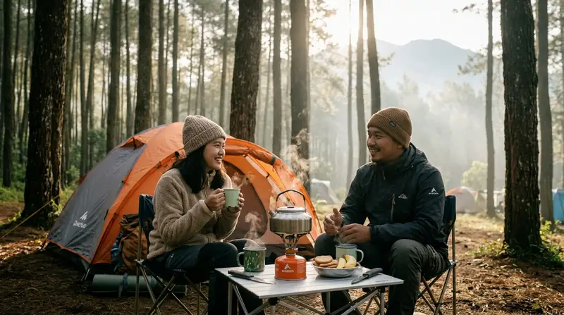

Perlengkapan camping Coban Rais yang utama meliputi tenda, jaket hangat, perlengkapan hujan, penerangan, dan alat masak bila membawa tenda sendiri di area hutan pinus.
Ringkasan Inti
- Pengunjung dengan tenda sendiri perlu menyiapkan tenda, alas tidur, penerangan, alat masak, dan pakaian hangat.
- Paket glamping yang dilaporkan JawaPos (2025) sudah mencakup tenda, kasur busa, bantal, sprei, selimut, lampu, alat masak, dan kayu bakar.
- Kawasan wisata air terjun tercatat buka 07.00-15.00 WIB menurut Indonesia Travel, sehingga persiapan waktu tiba penting.
- Cuaca dingin dan hujan membuat pakaian berlapis serta perlengkapan tahan air menjadi prioritas.
- Selalu konfirmasi ke pengelola barang apa yang disediakan atau dilarang.
Apa Saja Perlengkapan Wajib Camping di Coban Rais?
Perlengkapan wajib camping di Coban Rais mencakup tenda, alas tidur, penerangan, pakaian hangat, jas hujan, obat pribadi, power bank, dan kantong sampah.
Kelompok perlengkapan utama dapat dirinci seperti berikut:
- Tempat tidur: tenda sesuai kapasitas, flysheet atau terpal, matras, sleeping bag, dan bantal.
- Penerangan: senter, headlamp, atau lampu tenda dengan baterai cadangan.
- Pakaian: jaket, kaus kaki hangat, celana panjang, dan pakaian ganti.
- Perlindungan hujan: jas hujan, kantong kedap air, dan sandal atau sepatu cadangan.
- Kebersihan: tisu basah, sabun, handuk, dan kantong sampah.
Periksa semua perlengkapan di rumah sebelum berangkat. Tenda yang baru pertama dipakai sebaiknya dicoba pasang terlebih dahulu.
Apa yang Perlu Dibawa untuk Memasak dan Makan?
Untuk memasak dan makan, bawa kompor portabel, bahan bakar, nesting, alat makan, air minum, dan wadah tertutup, kecuali pengelola menyediakan perlengkapan tersebut.
Pada paket glamping yang dilaporkan JawaPos (2025), alat masak, alat makan, dan kayu bakar sudah termasuk. Karena itu, pengunjung paket tersebut biasanya hanya perlu membawa bahan makanan.
Pada camping ground, tanyakan apakah penggunaan kompor dan api unggun diperbolehkan serta di titik mana. Hutan pinus mudah terbakar, sehingga aturan api harus dipatuhi. Bawa air minum cukup dan jangan mengandalkan sumber air yang tidak jelas.

Aktivitas hangat memasak dan bersantai di depan tenda perkemahan keluarga di Coban Rais Batu.
Bagaimana Persiapan Menghadapi Cuaca Dingin dan Hujan?
Menghadapi cuaca dingin dan hujan di Coban Rais berarti memakai pakaian berlapis, menjaga pakaian tetap kering, dan menyiapkan alas tenda serta flysheet yang rapat.
Kawasan Batu berada di dataran tinggi, sehingga malam hari umumnya terasa dingin. Pakaian berlapis lebih efektif dibanding satu jaket tebal karena mudah disesuaikan.
Simpan pakaian ganti di kantong kedap air. Pasang terpal atau flysheet dengan kemiringan cukup agar air tidak menggenang. Hindari mendirikan tenda di cekungan yang mudah tergenang atau di dekat aliran sungai.
Apa yang Tidak Perlu Dibawa jika Memilih Glamping?
Jika memilih glamping, pengunjung umumnya tidak perlu membawa tenda, kasur, bantal, sprei, selimut, alat masak, dan kayu bakar bila paket pengelola mencakupnya.
JawaPos (2025) melaporkan satu paket glamping yang menyertakan perlengkapan tersebut. Karena paket berbeda, tanyakan daftar isi secara tertulis dan jangan berasumsi semua pengelola sama.
Yang tetap perlu dibawa adalah barang pribadi: pakaian, jas hujan, perlengkapan mandi, obat pribadi, charger, dan bahan makanan. Membawa terlalu banyak barang justru menyulitkan jika kendaraan harus parkir jauh dari tenda.
Bagaimana Menjaga Keselamatan Saat Berkemah?
Menjaga keselamatan saat berkemah berarti mematuhi aturan pengelola, tidak trekking saat gelap atau hujan deras, dan menyimpan kontak darurat serta obat pribadi.
Berikut praktik dasar yang disarankan:
- Beri tahu keluarga atau teman tentang lokasi dan jadwal pulang.
- Bawa kotak P3K sederhana berisi plester, antiseptik, dan obat pribadi.
- Jangan membiarkan anak berjalan sendiri di sekitar jalur dan sungai.
- Matikan api sepenuhnya sebelum tidur atau meninggalkan area.
- Hindari berteduh di bawah pohon besar saat petir.
Artikel ini bersifat informasi umum. Jika ada kondisi kesehatan khusus, konsultasikan dengan tenaga kesehatan sebelum berkemah.
Bagaimana Menjaga Kebersihan dan Etika di Area Kemah?
Menjaga kebersihan dan etika di area kemah berarti membawa pulang sampah, tidak merusak tanaman, menjaga ketenangan, dan menaati batas area yang ditentukan pengelola.
Pisahkan sampah dalam kantong dan buang di tempat yang disediakan, atau bawa pulang jika tempat sampah tidak memadai. Jangan membuang sisa makanan atau minyak ke sungai.
Hormati pengunjung lain dengan membatasi volume musik di malam hari. Jangan menebang atau mematahkan ranting untuk kayu bakar tanpa izin. Perilaku kecil ini menjaga kenyamanan kawasan bagi semua pengunjung.
Bagaimana Mengatur Waktu Tiba dan Kegiatan?
Waktu tiba terbaik di Coban Rais adalah siang hingga sore agar tenda terpasang sebelum gelap, dengan memperhatikan jam operasional kawasan yang tercatat 07.00-15.00 WIB.
Indonesia Travel mencatat jam buka kawasan air terjun pukul 07.00-15.00 WIB. Jam ini berkaitan dengan kunjungan harian, sehingga jadwal masuk untuk area menginap dapat berbeda. Konfirmasi jam check-in dan check-out ke pengelola.
Jika ingin trekking ke air terjun, lakukan pada pagi atau siang hari. Sumber berbeda menyebut waktu jalan sekitar 30 sampai 40 menit, jadi sisakan waktu cadangan dan hindari berjalan saat hari mulai gelap.
FAQ Perlengkapan Camping Coban Rais
Perlu jika memakai camping ground tanpa sewa perlengkapan. Pada paket glamping yang mencakup kasur dan selimut, sleeping bag mungkin tidak diperlukan, tetapi konfirmasi isi paketnya.
Tergantung aturan pengelola. Pada paket glamping yang dilaporkan JawaPos (2025), kayu bakar dan api unggun menjadi bagian pengalaman. Tetap ikuti aturan titik api dan padamkan sepenuhnya.
Barang yang sering terlupa antara lain senter cadangan, kantong sampah, pakaian ganti kering, obat pribadi, dan power bank. Buat daftar periksa sebelum berangkat.